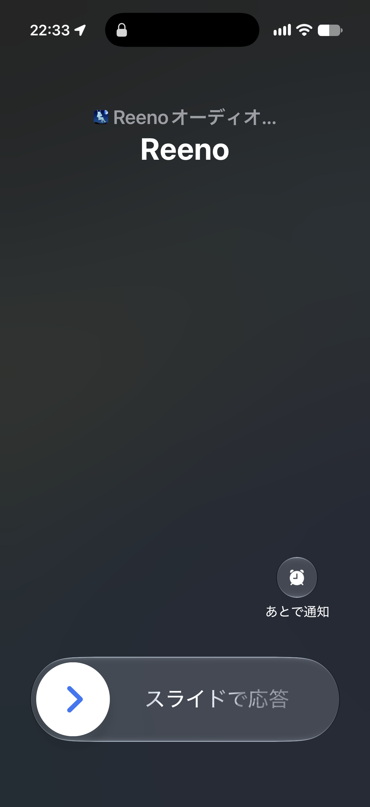
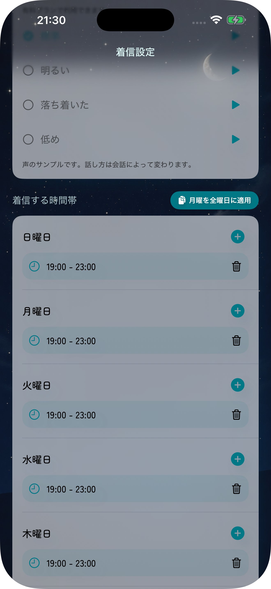
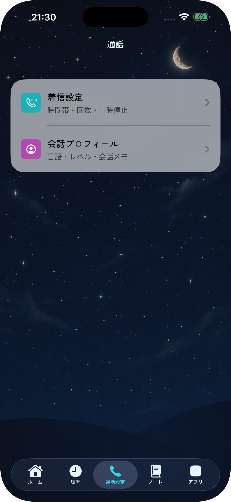
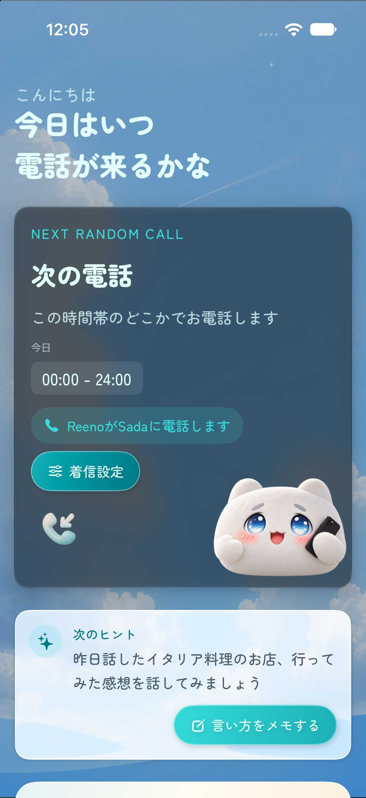
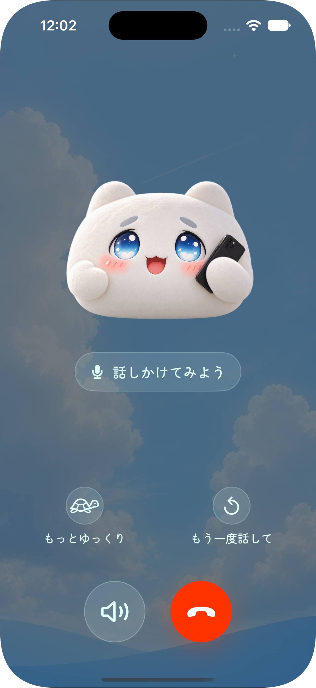

Meet Reeno
電話が来たら、
会話を楽しもう。
AIから、あなたに電話がかかってくる。
日常の中に、外国語で話すきっかけを。
長田 公喜 / Reeno 企画・開発・運営
サービス紹介 / 2026.11
About the maker
長田 公喜 Koki Osada
iOSアプリの企画・開発・運営。
アプリ開発
学生時代から
アプリづくりを継続。
医療の現場
東北大学卒業後、
大学病院で勤務。
SaMDにも従事
厳しい規制のある
医療機器ソフトウェア。
つくる。
届ける。
育てる。
開発アプリの例：Multi-Timer / Starter Kit / SprintLens
Explore Reeno
この資料の内容。
どんな体験？
Reenoが生まれた理由と、
電話が来る楽しさ。
どう使う？
着信・会話の設定から、
通話後のふりかえりまで。
Reenoを投稿するなら
Reenoの特徴と、
ガイド・紹介用素材。
まずは「どんな体験？」から。Reenoの特徴と楽しみ方をご紹介します。
Talk first
会話を楽しむ。
その先に、外国語を話す機会が増える。
話すきっかけ
日常の中で、
Reenoから声がかかる。
自分の言葉で
今日の出来事や、
好きなものを話してみる。
次の会話へ
話した内容と、
次に使いたい表現を見る。
会話言語：英語・日本語・韓国語・中国語・スペイン語・フランス語・ドイツ語
Why I built Reeno
自分自身も、
話せるようになりたかった。
留学に行く機会があり、
外国語で話すことが、
自分にとっても身近な課題になった。
なりたい」
電話してくれたら？
Why a phone call? / 01
なぜ電話？
自分から開くアプリは、
開くのを忘れたり、
開きたくなくなったり。
→ Reeno側からかけてくるから、
忘れずに、続けられる。
通常の着信は、設定した曜日・時間帯と通話枠の範囲内。
アプリを開いたまま待つ必要はない。

Why a phone call? / 02
なぜ電話？
普通の英語アプリは、
「英語を勉強しなきゃ」と
頑張ってしまう。
→ Reenoなら、ふいに来た電話で、
準備せず、力まず自然におしゃべり。
そのときの気分や、今日の出来事から。
話す内容を決めておく必要はありません。
A little discovery
言葉が出なくても、大丈夫。
準備していないときに、電話が来る。
英語が出てこない……。
なんて言うんだろう？
その「言いたい」が、
学びのきっかけに。
言えなかった表現を、あとで知る。
次のおしゃべりで、使ってみる。
会話の中で「知りたい」を見つけよう。
研究でも、外国語を使おうとして表現上の問題に気づくことが、学びにつながりうるとされています。
参考：Swain & Lapkin（1995）／アウトプットと「気づき」の研究 ↗（研究内容の要約）
Research paper / 1995
論文紹介：言葉に詰まるときの「気づき」
Problems in Output and the Cognitive Processes They Generate:
A Step Towards Second Language Learning
Merrill Swain & Sharon Lapkin（1995）／ Applied Linguistics, 16(3), 371–391
何を調べた？ フランス語の作文・推敲中に、学習者が考えたことを声に出してもらい、分析。
- 01 / アウトプット
伝えようとする
伝えたい内容を、
外国語で書いてみる。 - 02 / 気づき
「どう言えばいい？」
言いたいことと、
今の自分の表現の差に気づく。 - 03 / 表現の見直し
考え直して、試す
単語や文の形を見直し、
表現を修正する。
論文のポイント
表現しようとして問題に気づき、考え直す。その過程が、外国語の学びの一部になりうる。
論文を読む：Swain & Lapkin（1995）↗ ／ 日本語の説明・図は論文内容の要約です。Reenoの学習効果を検証した研究ではありません。
A conversation that continues
前に話したことが、
次の会話につながる。
話したことや好みをもとに、
あなたに合った話題へ。
会話例は説明用。実際の発言・応答は毎回変わる。
Explore Reeno
この資料の内容。
どんな体験？
Reenoが生まれた理由と、
電話が来る楽しさ。
どう使う？
着信・会話の設定から、
通話後のふりかえりまで。
Reenoを投稿するなら
Reenoの特徴と、
ガイド・紹介用素材。
続いて「どう使う？」。設定から振り返りまで、一緒に見ていきましょう。
How it works
設定 → 電話に出る → 振り返り
設定する
「着信設定」で、
電話に出られる曜日・時間帯。
「会話プロフィール」で、
話す言語・会話レベル。
電話に出る
Reenoからの電話に出て、
気軽におしゃべり。
今、話したいときは、
ホームの電話ボタンから
「今すぐ電話をもらう」。
振り返る
「履歴」で、
会話のまとめを確認。
使ってみたい表現は、
「ノートに入れる」で保存。
まずは自分に合う設定を。この流れに沿って、実際の画面を見ていきましょう。
- 設定
- 電話に出る
- 振り返る
電話に出られる時間を、
自分で決める。
「通話設定」→「着信設定」。
曜日の「＋」から、開始・終了時刻を選び、
「追加する」を押します。
例：19:00〜23:00
忙しい日は「今日はもう鳴らさない」。
その日のうちに戻すときは「今すぐ再開」。

- 設定
- 電話に出る
- 振り返る
話す言語と、
会話レベルを選ぶ。
「通話設定」→「会話プロフィール」へ。
会話する言語
Reenoと話したい言語を選びます。
会話レベル
迷ったら「初心者」から。
自分に合うレベルを選びます。
あとから同じ画面で変更できます。

- 設定
- 電話に出る
- 振り返る
一度、電話に
出てみよう。
ホームの「着信設定」の下にある電話ボタンから
① ホームの電話ボタンを押す
② 「今すぐ電話をもらう」を押す
③ 着信に応答して「Hello?」
④ 一言話す → 終える → 履歴を見る
受付後、着信まで待ち時間がある。

- 設定
- 電話に出る
- 振り返る
聞き取れないときは、
ボタンで。
速く感じたら「もっとゆっくり」
Reenoに、もっとゆっくり話してほしいと
ボタンでお願いできます。
聞き逃したら「もう一度話して」
Reenoが直前に話した内容を、
もう一度話してもらえます。
会話中の画面から、タップで伝えられます。

- 設定
- 電話に出る
- 振り返る
話したあとに、
ちょっとふりかえる。
何を話した？
「履歴」→ 見たい通話を開く。
次は、こう言ってみよう。
下へスクロールして「ノートに入れる」。
内容を確認し、右上の「保存」を押す。
「今日、言えたこと」を一つ見つけよう。

Explore Reeno
この資料の内容。
どんな体験？
Reenoが生まれた理由と、
電話が来る楽しさ。
どう使う？
着信・会話の設定から、
通話後のふりかえりまで。
Reenoを投稿するなら
Reenoの特徴と、
ガイド・紹介用素材。
向こうから電話が来る。だから、会話を続けやすい。Reenoの特徴を振り返りましょう。
Reeno concept
Reenoらしさ、5つのポイント。
いちばんの新しさ
AIから、電話が来る。
自分から始めなくても、会話が始まる。
忘れず、続けられる
開くのを忘れていても、
Reenoから電話が来る。
だから、会話を続けやすい。
力まず、おしゃべり
ふいの電話に出るだけ。
「勉強しなきゃ」と構えず、
自然に会話が始まる。
「言えない」も
大切な学び
準備なしで話すから、
言えない表現に気づく。
「知りたい」が生まれる。
あなたを知る、
話し相手に。
前の会話や好みを覚えて、
あなたに合う話題を選ぶ。
友達のように、会話が続く。
Creator assets
投稿用素材も
利用OK
① 公開中の「投稿用素材」を開く
② 着信・通話・キャラクターを選ぶ
③ 自分の映像やテロップと組み合わせる
画像は開いて長押し保存。
うまくいかないときはSafari / Chromeへ。
画像・動画を1点ずつ保存。
トリミング、文字入れ、動画編集もOK。
実際の着信表示・サンプル画面・紹介用イメージの区別は、各素材の説明を確認する。
Start a conversation
まず一度、
電話に出てみよう。
電話が、話すきっかけになったこと。
構えず、自然に話せたこと。
あなたのペースで、
Reenoとの会話を楽しもう。